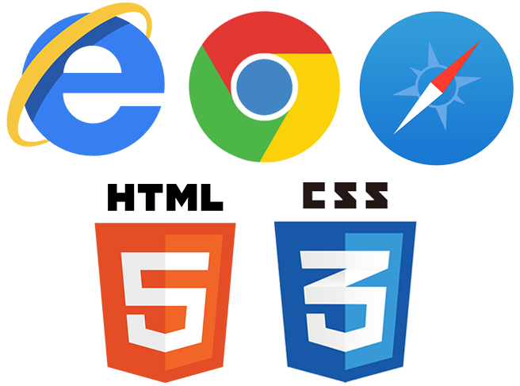
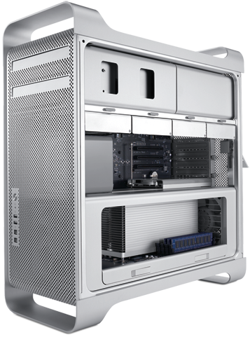
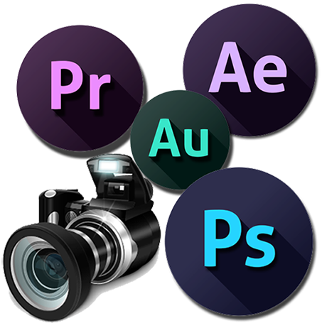

技术部
硬件部
采编部
秘书部
加入我们
后勤与产业管理处网站
12年的历史/出色的培训/轻松的氛围


A

技术部
网站的核心部门，负责代码的编写维护工作，保障网站的正常运行以及必要的功能和模板的更新。
集技术与创新为一体，以学习与开拓为目标，这是技术部的最佳诠释。
A

硬件部
主要负责完善服务器的配置，保持服务器的稳定以及网站的正常运行。
在熟悉掌握技术知识的同时，对硬件设施的了解和维护是硬件部的重要职责。
A

采编部
负责对网站内容信息的采集、编辑和后期处理，主要包括新闻，图片和视频。
不错过任何有价值的新闻要点，及时反映后勤处最新的工作动态是其最为重要的工作。
A
秘书部
秘书部要负责传达及监督工作。及时下达站长指令、向站长反馈成员工作情况；对成员值班状况进行监督，同时负责网站财务、资料及物品的管理和对其他日常事物的调度。
A